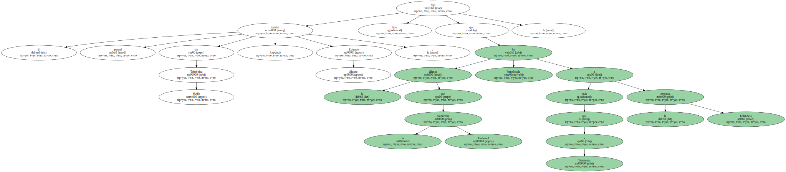
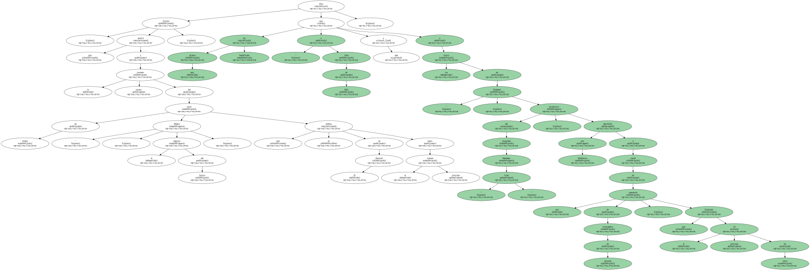
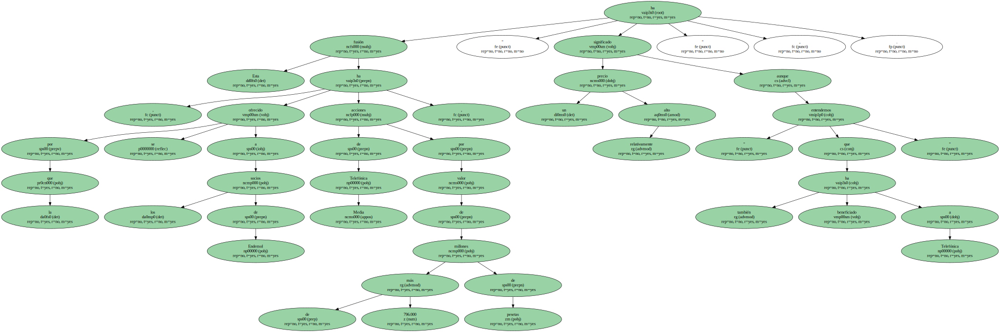
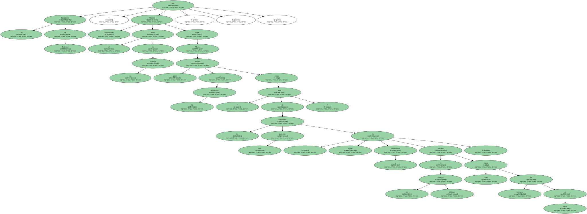
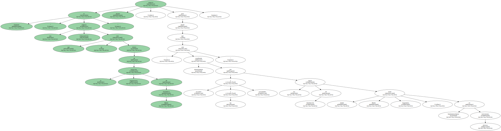
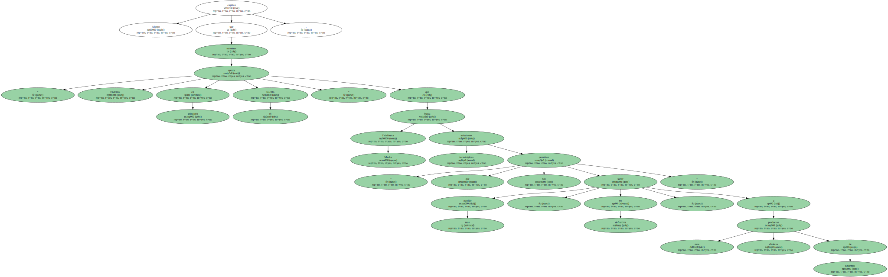
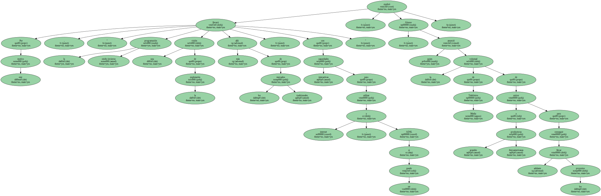
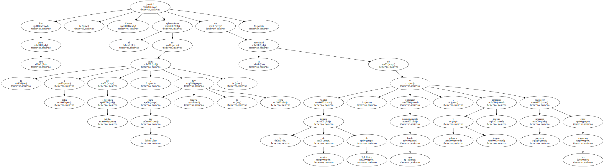
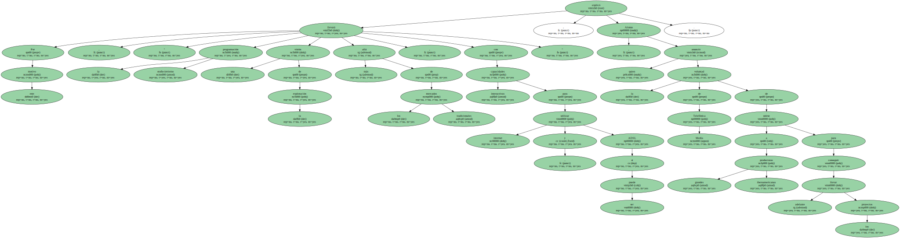
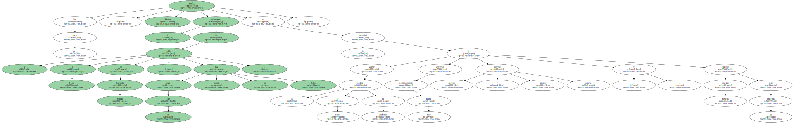

El director general de Telefónica Media , Eduardo Alonso , dijo hoy que la alianza con la productora Endemol ha beneficiado más a la empresa holandesa que a Telefónica.
Alonso , que asistió a la tercera jornada del curso de verano " Media , el negocio del futuro " que se celebra en El Escorial hasta el próximo viernes , dijo que esta alianza ha beneficiado más a " John de Mol y a los socios de Endemol " , productora del programa " Gran Hermano " , absorbida por Telefónica a través de una operación de intercambio de acciones , que finalizará el próximo 24 de julio.
Esta fusión , por la que se ha ofrecido a los socios de Endemol acciones de Telefónica Media por valor de más de 796.000 millones de pesetas , " ha significado un precio relativamente alto " , aunque " entendemos que también ha beneficiado a Telefónica ".
Los fundadores de Endemol " han obtenido lógicamente el rédito de su trabajo " , según Alonso quien definió a la productora como " una de las compañías más punteras , donde la creatividad ha brillado en los últimos tiempos , tanto en formatos como en ideas ".
Los fundadores de Endemol " han obtenido lógicamente el rédito de su trabajo " , según Alonso quien definió a la productora como " una de las compañías más punteras , donde la creatividad ha brillado en los últimos tiempos , tanto en formatos como en ideas ".
Los fundadores de Endemol " han obtenido lógicamente el rédito de su trabajo " , según Alonso quien definió a la productora como " una de las compañías más punteras , donde la creatividad ha brillado en los últimos tiempos , tanto en formatos como en ideas ".
Los fundadores de Endemol " han obtenido lógicamente el rédito de su trabajo " , según Alonso quien definió a la productora como " una de las compañías más punteras , donde la creatividad ha brillado en los últimos tiempos , tanto en formatos como en ideas ".
Endemol " es una empresa independiente que no está dentro de la estructura organizativa de Telefónica Media " anunció Alonso , para añadir que " está absolutamente coordinada por sus acciones y actividades y las líneas de distribución donde Media tiene hegemonía , fundamentalmente en televisiones abiertas ".
Alonso explicó que " Endemol aporta en principio el talento " mientras que Telefónica Media busca soluciones tecnológicas " que nos permitan sacar más partido , en definitiva , a esos productos clásicos de Endemol ".

Alonso explicó que " Endemol aporta en principio el talento " mientras que Telefónica Media busca soluciones tecnológicas " que nos permitan sacar más partido , en definitiva , a esos productos clásicos de Endemol ".

Alonso explicó que " Endemol aporta en principio el talento " mientras que Telefónica Media busca soluciones tecnológicas " que nos permitan sacar más partido , en definitiva , a esos productos clásicos de Endemol ".
Alonso explicó que " Endemol aporta en principio el talento " mientras que Telefónica Media busca soluciones tecnológicas " que nos permitan sacar más partido , en definitiva , a esos productos clásicos de Endemol ".
Por este motivo , " la programación otoño-invierno llevará una visión de la explotación más allá de los mercados tradicionales , con capacidades interactivas para utilizar internet , y si puede ser ADSL " , explicó Alonso , quien anunció la voluntad de Telefónica Media de unirse a grandes productoras iberoamericanas para conseguir llevar adelante los proyectos.
Por otra parte , Alonso justificó el aplazamiento de la salida a bolsa de Telefónica Media , para la que todavía no hay fecha , en la necesidad de validar la política de medios de Telefónica , conseguir posicionamiento muy fuerte , adquirir y generar nuevas empresas y establecer mayores sinergias entre las empresas.
